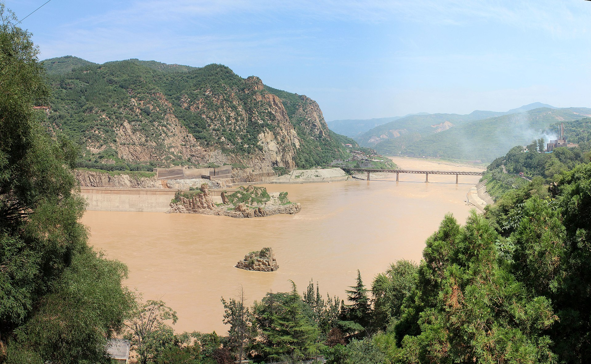

Huang He
terbina di kedudukan dua sungai utama yang mengalir dari kawasan
pergunungan di sebelah barat ke Lautan Pasifik.
Sungai Huang He atau dikenali juga
sebagai Sungai Kuning terletak di kawasan utara negara China, manakala Sungai Yangtze
di bahagian tengah China mengalir ke timur hingga ke Laut Kuning.
Huang He bermaksud Sungai Kuning yang menyimpan banyak lumpur kekuningan yang subur.
Masyarakat awal China telah membina petempatan dan menjalankan
aktiviti pertanian dan penternakan binatang selain mengumpul hasil hutan dan berburu
di sepanjang Sungai Huang He.
Penduduk di kawasan ini turut menghadapi banjir disebabkan
oleh limpahan air Sungai Huang He yang menenggelamkan keseluruhan kampung.
Hal
ini ditambah pula dengan kedudukan geografi tamadun ini yang terpencil,menyebabkan
penduduk awal tamadun ini hanya dapat menghasilkan makanan sendiri dan tidak berdagang
dengan orang luar.